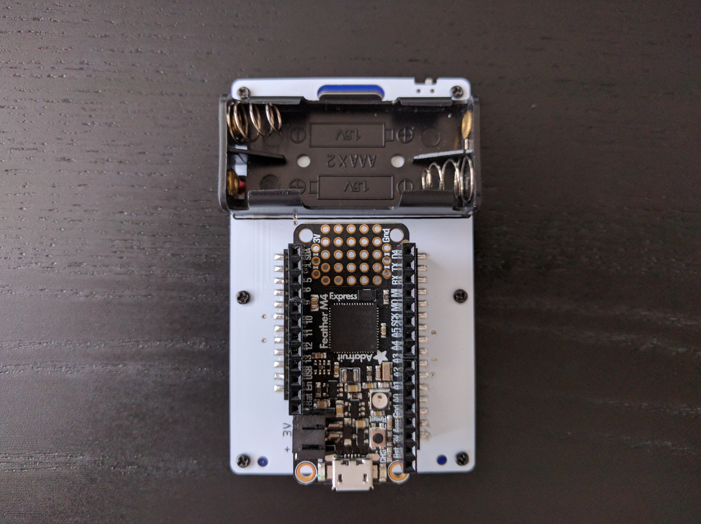
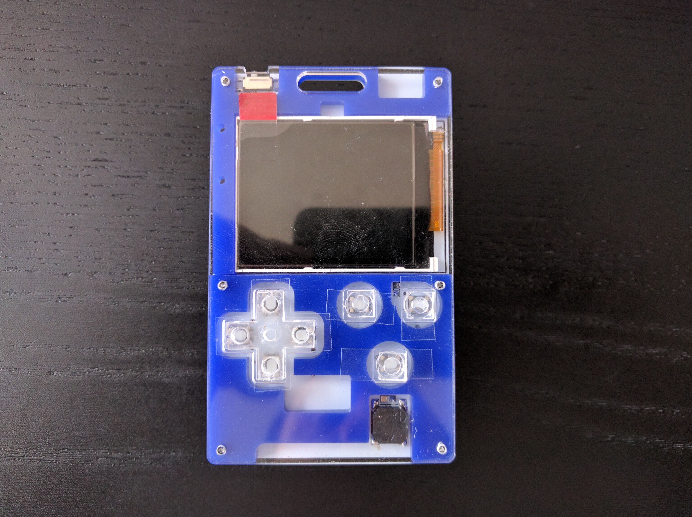

Assembled¶
Published on 2020-08-14 in Handheld Wing.
The PCBs arrived a while ago, but I was still waiting for the SMD pin headers. Those arrived today, so I assembled it.
Using those headers for the first time, I’m actually quite happy with them. The only problem I can see is that the default Fritzing footprint for them makes the pads really large, so there is a lot of wiggle room to how they can be soldered — but you need quite precise positioning for the headers to work with the feather. Soldering manually is not a problem, because you simply plug a feather into the headers to make sure the spacing is right. But if I were to have this assembled in a fab, it would be a problem — possibly using a footprint with smaller pads would solve that problem.
I also assembled the case from some left-over laser-cut pieces I had from the previous prototypes. The d-pad and button caps needed some improvising, I just glued them from several layers. It’s not pretty, but it’s good enough for prototyping.
Now I can try and port my games to various exotic feathers. But of course that involves coding, and that requires much more motivation than I have, so it will be probably be a while.\